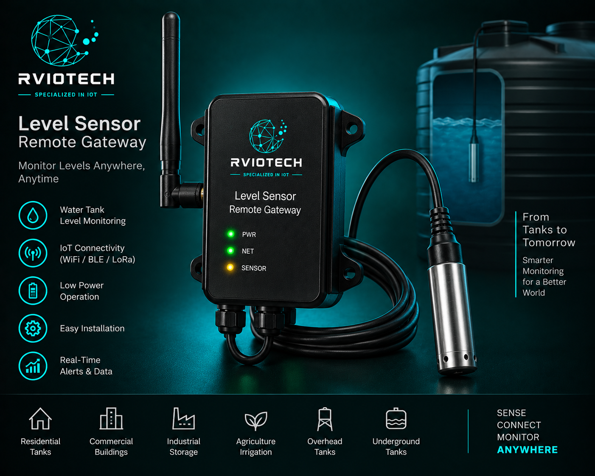

Concept image. Final product design may vary.
Level Sensor +
Remote Gateway
A connected level monitoring solution designed to measure tank, water, liquid or material levels and transmit readings remotely for centralized monitoring and management.
ENQUIRE ABOUT THIS PRODUCT →From Level Measurement to Remote Monitoring
The level sensor measures the level of the monitored material or liquid. The remote gateway collects the sensor data and transmits it to a monitoring platform for remote access and analysis.
Monitor Levels Without Being On Site
Manual level checking can require frequent site visits and provides limited visibility between inspections. A connected level sensor and remote gateway provide continuous access to level information from a centralized monitoring system.
- Remote level monitoring
- Sensor-based level measurement
- Wireless IoT connectivity
- Remote gateway
- Configurable reporting intervals
- Centralized data monitoring
- Cloud and dashboard integration
- Suitable for multiple monitoring applications
Where It Can Be Used
Built for Remote Monitoring
- 01 Remote visibility of level status
- 02 Reduced need for manual inspections
- 03 Centralized monitoring
- 04 Configurable reporting
- 05 Scalable for multiple locations
- 06 Integration with existing IoT platforms
Monitor Levels Remotely
Connect level measurement to remote monitoring and get visibility wherever your assets are located.